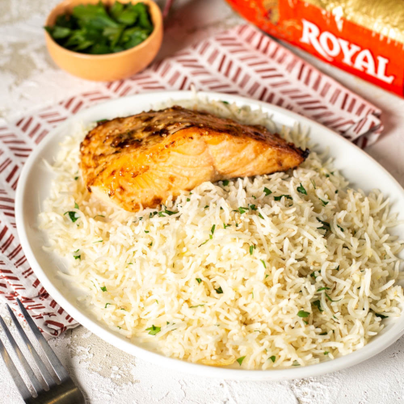

Description
Salmon seasoned with salt, pepper, and garlic with basmati rice.
Ingredients:
- 1-4 salmon filets
- 1/2 cup of rice per salmon filet
- Garlic or garlic paste
- Salt
- Pepper
- 1/2-3/4 stick of butter
- Water
- Prep Time: 5
- Cook Time: 20
- Total Time: 25 mins